{kind=link}
Code
# Standard Data Science Imports
import numpy as np
import pandas as pd
import matplotlib.pyplot as plt
import seaborn as sns
import sklearn as skMachine Learning
Biologists in particular have been thinking like this for a long time while doing Taxonomy. In your fig folder you will find the biologist version of Twenty Questions for the birds of the world, in the file Kimball_2019_OW_supertree_poster.png. And below you can see a Decision Tree applied to the classical Iris dataset (from the scikit-learn website).

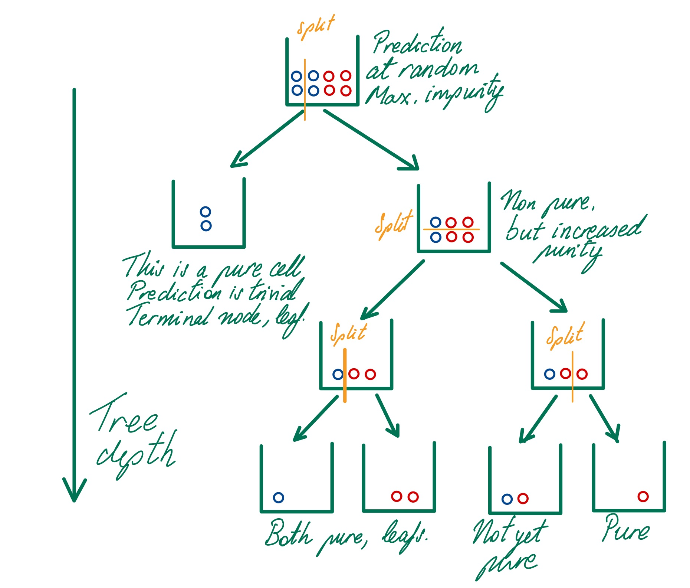
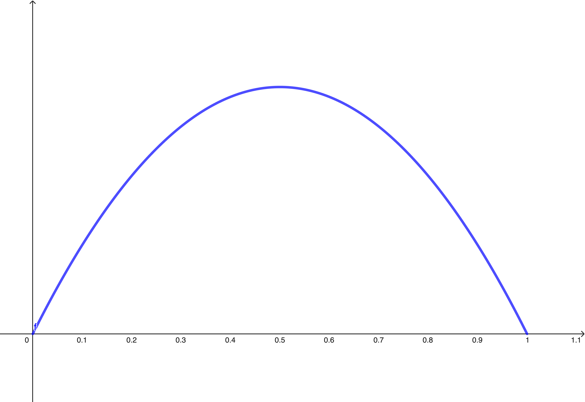
# Standard Data Science Imports
import numpy as np
import pandas as pd
import matplotlib.pyplot as plt
import seaborn as sns
import sklearn as sk%run -i "2_4_Default_Dataset.py"
# %load "2_4_Default_Dataset.py"%run -i "../exclude/code/2_4_Exercise003.py"Initial Gini = 0.06249782986111111sns.set_theme(rc={'figure.figsize':(10, 3)});
sns.scatterplot(XTR, x = "balance", y=YTR, hue=YTR);
plt.axvline(x=2100, ls="--", c="red", lw=3)
plt.text(x = 2120, y = 0.5, s="Split at 2100?")Text(2120, 0.5, 'Split at 2100?')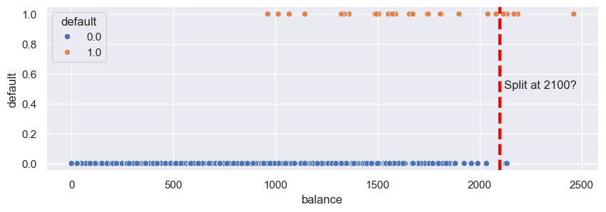
# %load "2_4_gini_subnodes.py"
%run -i "2_4_gini_subnodes.py"Let us apply the function to the training set with the split at the suggested value 2100. Try some other values.
gini_l, gini_r, n_l, n_r = gini_subnodes(df = dfTR, var="balance", split=2100)
gini_l, gini_r, n_l, n_r(0.05307588891984114, 0.40816326530612246, 953, 7)# %run -i "../exclude/code/2_4_Exercise004.py"def gini_update(df, var, split):
gini_l, gini_r, n_l, n_r = gini_subnodes(df, var, split)
n = n_l + n_r
new_gini = (n_l / n) * gini_l + (n_r / n) * gini_r
return(new_gini)gini_update(dfTR, "balance", 2100)0.05566506770599111balances = dfTR["balance"].values
midpoints = [(balances[k] + balances[k + 1])/2 for k in range(len(balances) - 1)]
newGinis = np.array([gini_update(dfTR, "balance", m) for m in midpoints])
print(f"The new total minimum Gini is %.5f splitting at (midpoint number %d) = %.1f" % (np.min(newGinis),
np.argmin(newGinis),
midpoints[np.argmin(newGinis)]))
# sns.lineplot(x=midpoints, y = newGinis)The new total minimum Gini is 0.05009 splitting at (midpoint number 949) = 2037.0%run -i "./2_4_SimData0_dataset.py"
# XTRPreprocessing completed. Train and test set created.dfTR = XTR.copy(); dfTR['Y'] = YTR
dfTS = XTS.copy(); dfTS['Y'] = YTSplt.figure(figsize=(10, 6))
sns.scatterplot(dfTR, x="X1", y="X2", hue="Y");
plt.show();plt.close()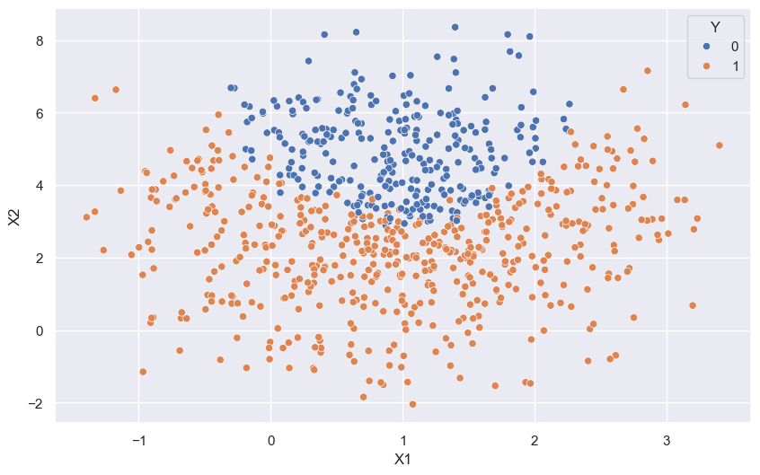
from sklearn.pipeline import Pipeline
from sklearn.preprocessing import StandardScaler
from sklearn.compose import ColumnTransformer
num_transformer = Pipeline(
steps=[("scaler", StandardScaler())]
)
preprocessor = ColumnTransformer(
transformers=[
("num", num_transformer, num_inputs),
("cat", "passthrough", ohe_inputs),
]
)hyp_grid = {'Dtree__max_depth': range(2, 10)}
from sklearn.tree import DecisionTreeClassifier
DecTree_pipe = Pipeline(steps=[('preproc', preprocessor),
('Dtree', DecisionTreeClassifier(criterion='gini',
random_state=1))]) num_folds = 10
from sklearn.model_selection import GridSearchCV
DecTree_gridCV = GridSearchCV(estimator=DecTree_pipe,
param_grid=hyp_grid,
cv=num_folds,
return_train_score=True)DecTree_gridCV.fit(XTR, YTR)GridSearchCV(cv=10,
estimator=Pipeline(steps=[('preproc',
ColumnTransformer(transformers=[('num',
Pipeline(steps=[('scaler',
StandardScaler())]),
['X1',
'X2',
'X3']),
('cat',
'passthrough',
['X4_A',
'X4_B'])])),
('Dtree',
DecisionTreeClassifier(random_state=1))]),
param_grid={'Dtree__max_depth': range(2, 10)},
return_train_score=True)In a Jupyter environment, please rerun this cell to show the HTML representation or trust the notebook. GridSearchCV(cv=10,
estimator=Pipeline(steps=[('preproc',
ColumnTransformer(transformers=[('num',
Pipeline(steps=[('scaler',
StandardScaler())]),
['X1',
'X2',
'X3']),
('cat',
'passthrough',
['X4_A',
'X4_B'])])),
('Dtree',
DecisionTreeClassifier(random_state=1))]),
param_grid={'Dtree__max_depth': range(2, 10)},
return_train_score=True)Pipeline(steps=[('preproc',
ColumnTransformer(transformers=[('num',
Pipeline(steps=[('scaler',
StandardScaler())]),
['X1', 'X2', 'X3']),
('cat', 'passthrough',
['X4_A', 'X4_B'])])),
('Dtree', DecisionTreeClassifier(max_depth=8, random_state=1))])ColumnTransformer(transformers=[('num',
Pipeline(steps=[('scaler', StandardScaler())]),
['X1', 'X2', 'X3']),
('cat', 'passthrough', ['X4_A', 'X4_B'])])['X1', 'X2', 'X3']
StandardScaler()
['X4_A', 'X4_B']
passthrough
DecisionTreeClassifier(max_depth=8, random_state=1)
param_values = DecTree_gridCV.cv_results_[f'param_Dtree__max_depth']
mean_train_scores = DecTree_gridCV.cv_results_['mean_train_score']
plt.plot(param_values, mean_train_scores, marker='o', label='Mean Train Score')
mean_test_scores = DecTree_gridCV.cv_results_['mean_test_score']
plt.plot(param_values, mean_test_scores, marker='*', label='Mean Test Score')
plt.xlabel('Tree Depth')
plt.ylabel('Score (accuracy)')
plt.title('Hyperparameter Tuning Results')
plt.legend() # Add a legend to the plot
plt.show()
plt.close()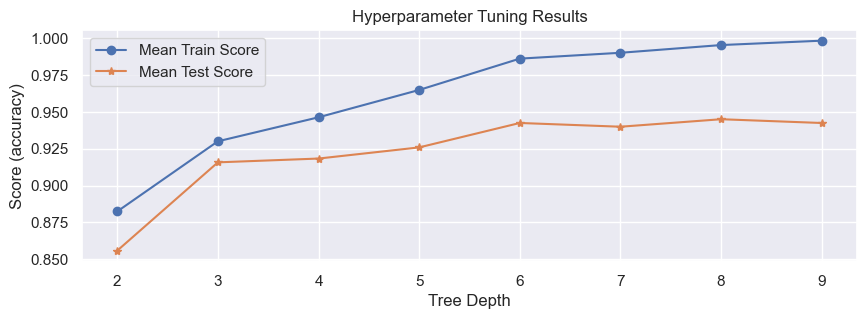
The plot shows that the selected hyperparameter corresponds to a tree with depth equal to:
DecTree_gridCV.best_params_{'Dtree__max_depth': 8}# from sklearn.tree import plot_tree
# plt.figure(figsize=(60, 60))
# plot_tree(DecTree_gridCV.best_estimator_['Dtree'], filled=True)
# plt.show()DecTree_gridCV.score(XTR, YTR), DecTree_gridCV.score(XTS, YTS)(0.9936143039591315, 0.9296482412060302)There is a large difference between the result in training and test, this model is overfitting!
model = DecTree_gridCV
model_name = "Dtree"# Dataset for Training Predictions
dfTR_eval = XTR.copy()
dfTR_eval['Y'] = YTR # Store the actual predictions
newCol = 'Y_'+ model_name +'_prob_neg';
dfTR_eval[newCol] = model.predict_proba(XTR)[:, 0]
newCol = 'Y_'+ model_name +'_prob_pos';
dfTR_eval[newCol] = model.predict_proba(XTR)[:, 1]
newCol = 'Y_'+ model_name +'_pred';
dfTR_eval[newCol] = model.predict(XTR)# Test predictions dataset
dfTS_eval = XTS.copy()
dfTS_eval['Y'] = YTS
newCol = 'Y_'+ model_name +'_prob_neg';
dfTS_eval[newCol] = model.predict_proba(XTS)[:, 0]
newCol = 'Y_'+ model_name +'_prob_pos';
dfTS_eval[newCol] = model.predict_proba(XTS)[:, 1]
newCol = 'Y_'+ model_name +'_pred';
dfTS_eval[newCol] = model.predict(XTS)from sklearn.metrics import confusion_matrix, ConfusionMatrixDisplay
fig = plt.figure(constrained_layout=True, figsize=(6, 2))
spec = fig.add_gridspec(1, 3)
ax1 = fig.add_subplot(spec[0, 0]);ax1.set_title('Training'); ax1.grid(False)
ax2 = fig.add_subplot(spec[0, 2]);ax2.set_title('Test'); ax2.grid(False)
ConfusionMatrixDisplay.from_estimator(model, XTR, YTR, cmap="Greens", colorbar=False, ax=ax1, labels=[1, 0])
ConfusionMatrixDisplay.from_estimator(model, XTS, YTS, cmap="Greens", colorbar=False, ax=ax2, labels=[1, 0])
plt.suptitle("Confusion Matrices for "+ model_name)
plt.show(); 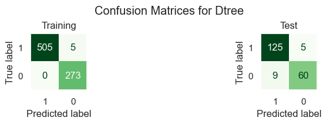
from sklearn.metrics import RocCurveDisplay
fig = plt.figure(figsize=(12, 4))
spec = fig.add_gridspec(1, 2)
ax1 = fig.add_subplot(spec[0, 0]);ax1.set_title('Training')
ax2 = fig.add_subplot(spec[0, 1]);ax2.set_title('Test')
RocCurveDisplay.from_estimator(model, XTR, YTR, plot_chance_level=True, ax=ax1)
RocCurveDisplay.from_estimator(model, XTS, YTS, plot_chance_level=True, ax=ax2);
plt.suptitle("ROC Curves for "+ model_name)
plt.show(); 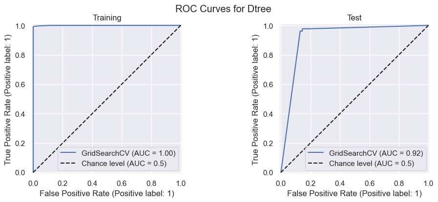
from sklearn.calibration import CalibrationDisplay
fig = plt.figure(figsize=(10, 2.6)); spec = fig.add_gridspec(1, 2)
ax1 = fig.add_subplot(spec[0, 0]);ax1.set_title('Training')
ax2 = fig.add_subplot(spec[0, 1]);ax2.set_title('Test')
CalibrationDisplay.from_estimator(model, XTR, YTR, n_bins=10, ax=ax1)
CalibrationDisplay.from_estimator(model, XTS, YTS, n_bins=10, ax=ax2);
plt.suptitle("Calibration Curves for "+ model_name);plt.show()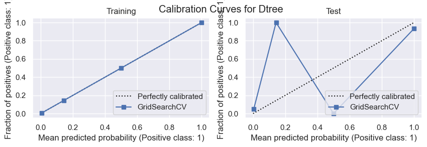
var_importances = pd.DataFrame({'var':XTR.columns,
'importance': DecTree_gridCV.best_estimator_['Dtree'].feature_importances_}
).sort_values(by="importance", ascending = False)
var_importances| var | importance | |
|---|---|---|
| 1 | X2 | 0.569743 |
| 0 | X1 | 0.369363 |
| 2 | X3 | 0.055972 |
| 3 | X4_A | 0.004923 |
| 4 | X4_B | 0.000000 |
In our case we will discard X_3 and X_4 and fit a new model.
DTree2_inputs = ['X1', 'X2']DTree2_pipe = Pipeline(steps=[('scaler', StandardScaler()),
('Dtree', DecisionTreeClassifier(criterion='gini',
random_state=1))])
DTree2_gridCV = GridSearchCV(estimator=DTree2_pipe,
param_grid=hyp_grid,
cv=num_folds,
return_train_score=True)
DTree2_gridCV.fit(dfTR[DTree2_inputs], dfTR["Y"]);modelDict = {"DTree2" : {"model" : DTree2_gridCV, "inputs" : DTree2_inputs}}
model_name = "DTree2"
model = modelDict[model_name]["model"]
model_inputs = modelDict[model_name]["inputs"]# %run -i "./2_4_Performance_Analysis_Binary_Classifier.py"# %run -i "./2_4_DecisionBoundary_2d_BinaryClassifier.py"# %run -i "./2_4_Plot_Decision_Tree.py"We have already trained several different types of models for this dataset. Now we will compare three models, each of a different type. The first one will be a logistic regression model. But recall that EDA has shown that the decision boundary in the X_1, X_2plane is non linear. To account for this, we will refit the model but beforehand we add a new column to the dataset, containing the squares of the values of X1.
dfTR["X1Sq"] = dfTR["X1"]**2
dfTS["X1Sq"] = dfTS["X1"]**2model_name = "LogReg"
LogReg_inputs = ["X1", "X2", "X1Sq"]
from sklearn.linear_model import LogisticRegression
LogReg_pipe = Pipeline(steps=[('scaler', StandardScaler()),
('LogReg', LogisticRegression(penalty=None))])
LogReg_pipe.named_steps['scaler'].set_output(transform='pandas')
LogReg_pipe.fit(dfTR[LogReg_inputs], YTR);
LogReg_coeff = np.hstack((LogReg_pipe.named_steps["LogReg"].intercept_[np.newaxis, :],
LogReg_pipe.named_steps["LogReg"].coef_))
print(LogReg_coeff)
modelDict[model_name] = {"model" : LogReg_pipe, "inputs" : LogReg_inputs}[[ 7.57332038 -18.94625368 -13.64390028 21.18728811]]import statsmodels.api as sm
XTR_sm = sm.add_constant(LogReg_pipe.named_steps['scaler'].transform(dfTR[LogReg_inputs]))
XTR_sm| const | X1 | X2 | X1Sq | |
|---|---|---|---|---|
| 330 | 1.0 | -1.978462 | 0.368036 | -0.483531 |
| 461 | 1.0 | 0.729319 | -0.344977 | 0.425124 |
| 945 | 1.0 | 0.161296 | 0.344238 | -0.260478 |
| 248 | 1.0 | 0.779554 | -0.052410 | 0.498405 |
| 398 | 1.0 | -0.381772 | -0.837718 | -0.670223 |
| ... | ... | ... | ... | ... |
| 353 | 1.0 | 0.610771 | 0.282255 | 0.260336 |
| 147 | 1.0 | 0.149271 | 1.133083 | -0.272152 |
| 540 | 1.0 | -0.857866 | 1.474887 | -0.831830 |
| 936 | 1.0 | -0.678704 | -0.830746 | -0.792680 |
| 312 | 1.0 | 0.776226 | 0.385282 | 0.493487 |
783 rows × 4 columns
logis_mod_sm = sm.Logit(YTR, XTR_sm)
logis_mod_sm_res = logis_mod_sm.fit()
logis_mod_sm_res.summary()Optimization terminated successfully.
Current function value: 0.080700
Iterations 12| Dep. Variable: | Y | No. Observations: | 783 |
| Model: | Logit | Df Residuals: | 779 |
| Method: | MLE | Df Model: | 3 |
| Date: | Mon, 03 Feb 2025 | Pseudo R-squ.: | 0.8752 |
| Time: | 17:10:43 | Log-Likelihood: | -63.188 |
| converged: | True | LL-Null: | -506.30 |
| Covariance Type: | nonrobust | LLR p-value: | 8.634e-192 |
| coef | std err | z | P>|z| | [0.025 | 0.975] | |
| const | 7.5643 | 1.030 | 7.347 | 0.000 | 5.546 | 9.582 |
| X1 | -18.9182 | 2.571 | -7.358 | 0.000 | -23.957 | -13.879 |
| X2 | -13.6264 | 1.810 | -7.529 | 0.000 | -17.174 | -10.079 |
| X1Sq | 21.1571 | 2.868 | 7.377 | 0.000 | 15.536 | 26.778 |
As you can see all the coefficients are significative, including the one for the square of X1.
# %run -i "./2_4_Performance_Analysis_Binary_Classifier.py"# %run -i "./2_4_DecisionBoundary_LogisticRegression.py"model_name = "knn"
knn_inputs = ["X1", "X2"]
k_values = np.ceil(np.linspace(3, XTR.shape[0] / 2, num=15)).astype("int").tolist()
k_values
hyp_grid = {'knn__n_neighbors': k_values}
from sklearn.neighbors import KNeighborsClassifier
knn_pipe = Pipeline(steps=[('scaler', StandardScaler()),
('knn', KNeighborsClassifier())])
from sklearn.model_selection import GridSearchCV
knn_gridCV = GridSearchCV(estimator=knn_pipe,
param_grid=hyp_grid,
cv=num_folds,
return_train_score=True)
knn_gridCV.fit(dfTR[knn_inputs], dfTR["Y"])
modelDict[model_name] = {"model" : knn_gridCV, "inputs" : knn_inputs}%run -i "./2_4_Performance_Analysis_Binary_Classifier.py"Model knn with model inputs ['X1', 'X2']
Model score in Training = 0.98
Model score in Test = 0.94
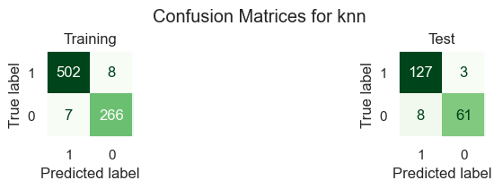
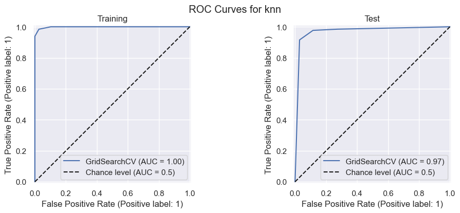
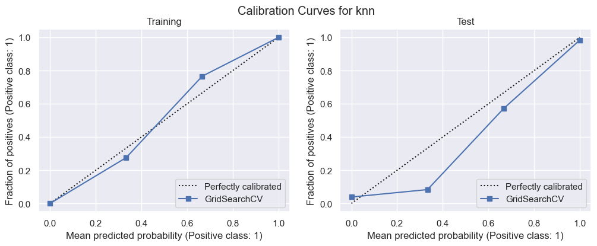
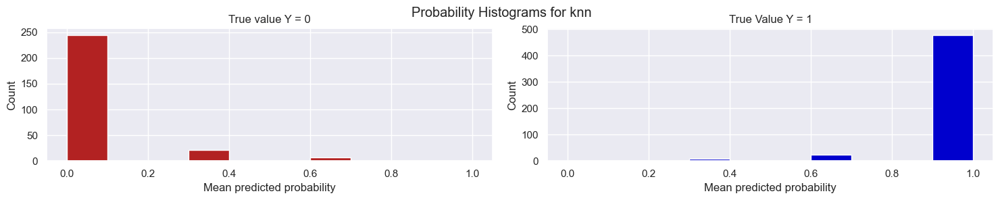
%run -i "./2_4_DecisionBoundary_2d_BinaryClassifier.py"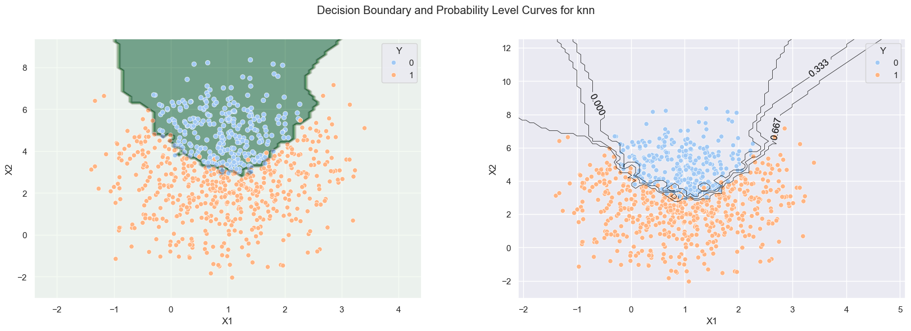
for ml in modelDict.keys():
print(f"Test score for %s = %.3f"%(ml, modelDict[ml]["model"].score(dfTS[modelDict[ml]["inputs"]], YTS)))Test score for DTree2 = 0.945
Test score for LogReg = 0.960
Test score for knn = 0.945The results suggest that the quadratic term has been very successful at increasing the predictive performance of the logistic model.
from sklearn.model_selection import cross_val_score
metric = 'f1'
score = {ml:cross_val_score(modelDict[ml]["model"], dfTR[modelDict[ml]["inputs"]], dfTR["Y"],
cv=10, scoring=metric) for ml in modelDict.keys()}
fig = plt.figure(figsize=(10, 4))
model_scores = pd.DataFrame(score)
sns.boxplot(model_scores.melt(var_name="model", value_name=metric), x=metric, y ="model");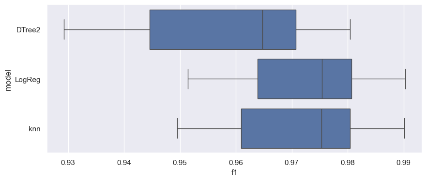
from sklearn.metrics import RocCurveDisplay
plt.figure(figsize=(6, 4))
fig, ax = plt.subplots()
for ml in modelDict.keys():
RocCurveDisplay.from_estimator(modelDict[ml]["model"],
dfTS[modelDict[ml]["inputs"]], dfTS["Y"],
ax=ax, name=ml[0], pos_label=1)
plt.title("ROC curves of the models for the Test set")
plt.show()<Figure size 600x400 with 0 Axes>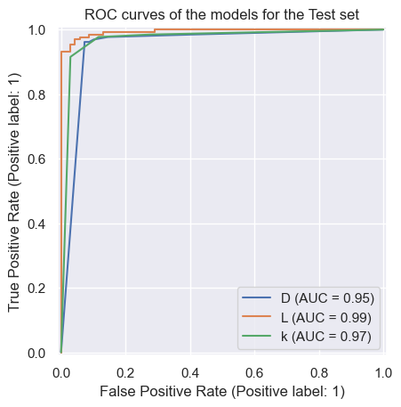
plt.rcdefaults();
from sklearn.calibration import CalibrationDisplay
plt.figure(constrained_layout=False, figsize=(12, 12))
fig, ax = plt.subplots()
for ml in modelDict.keys():
CalibrationDisplay.from_estimator(modelDict[ml]["model"],
dfTS[modelDict[ml]["inputs"]], dfTS["Y"],
n_bins=10,
ax=ax, name=ml, pos_label=1)
plt.title("Calibration curves of the models for the Test set")
plt.show()<Figure size 1200x1200 with 0 Axes>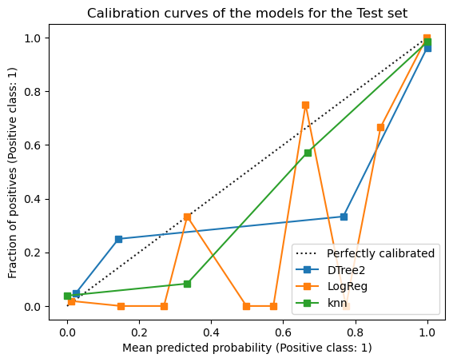